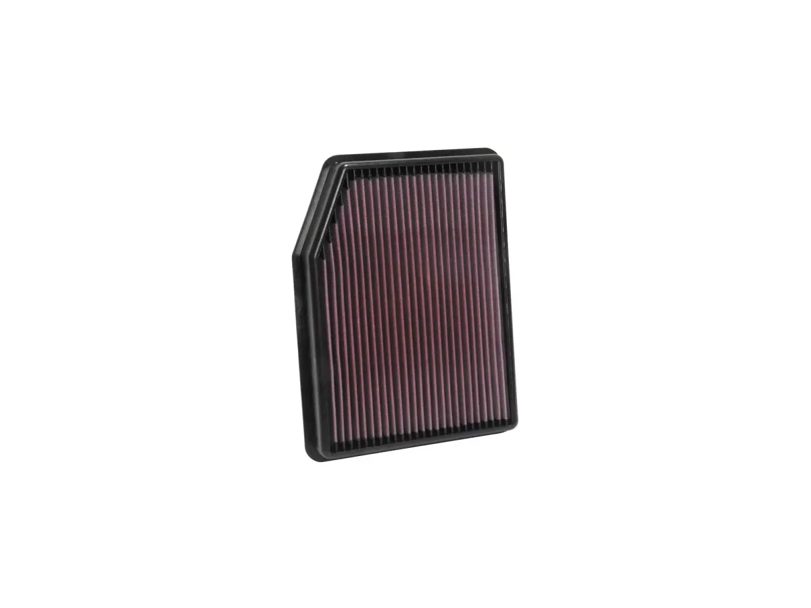
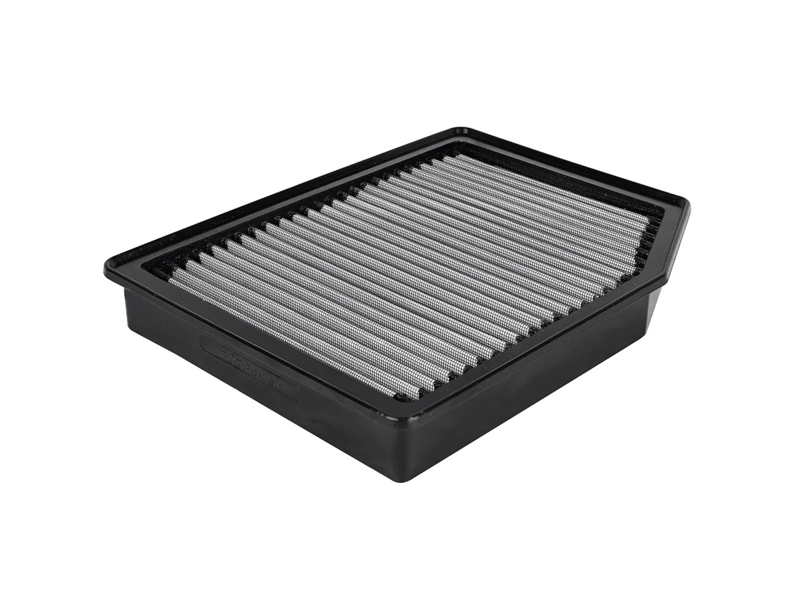
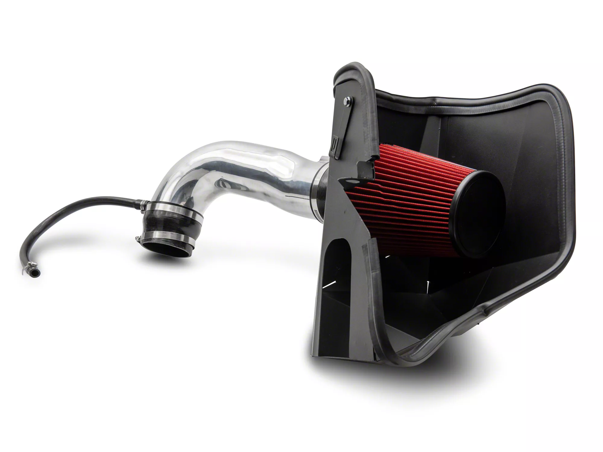
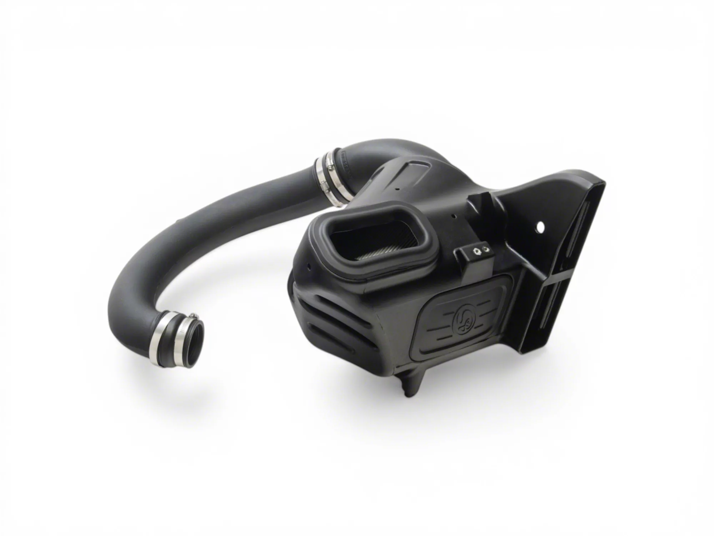
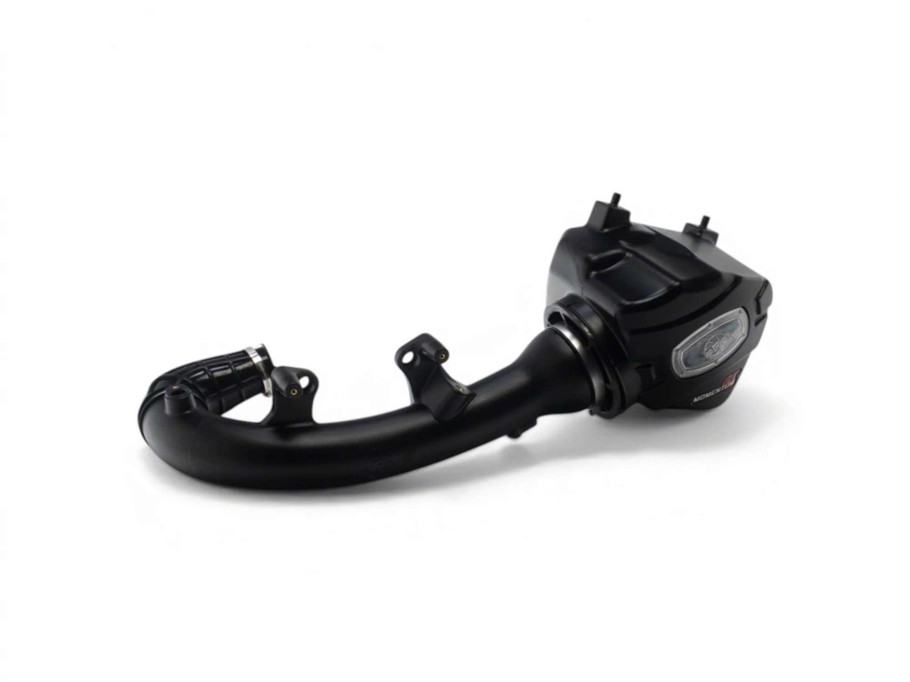
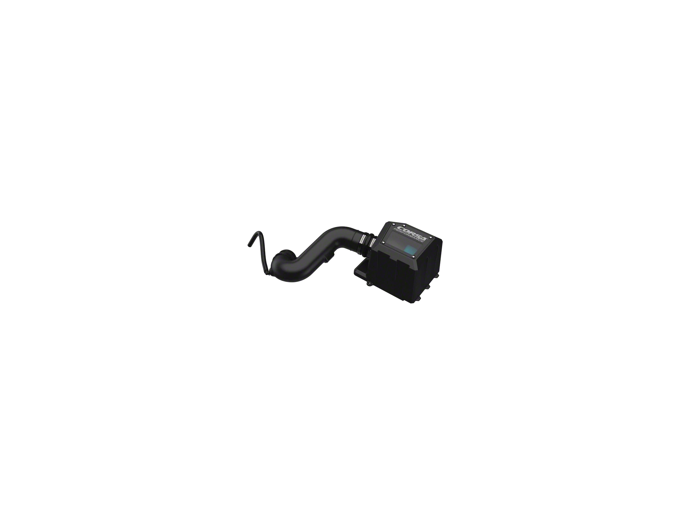

Intake Options From $65 to $476: What You Get at Each Price
Intakes are sold as one product category but they are really five different purchases at five different prices, and the differences between them are not proportional to what you pay. This article walks the whole range in order of price, using current listings, and says what each one changes and what
Intakes are sold as one product category but they are really five different purchases at five different prices, and the differences between them are not proportional to what you pay. This article walks the whole range in order of price, using current listings, and says what each one changes and what it does not.
Every price and review count below was read off the live listing on 4 November 2026. No horsepower figure appears anywhere on this page, and the section at the bottom explains why.
The one thing that decides whether you notice a difference
Before price, there is a more useful question: where does the filter draw air from?
An intake that pulls from inside the engine bay is pulling the hottest air available once the truck is warm and stationary. An intake that pulls from the factory fender location, behind the headlight, is pulling outside air. That single design detail separates a real cold air intake from a shiny pipe with a cone on the end, and it cuts across price: the cheapest option on this page keeps the factory cold-air path, and a $190 open cone does not.
So the price ladder below is not a quality ladder. It is a list of five different engineering trades.
1. The $65–97 drop-in panel filter
What it is: a reusable filter that drops into the factory airbox, reusing every other part of the factory intake.
What it changes: the filter medium, and only that. Airbox volume, intake tract diameter, and the cold-air draw location all stay exactly as the engineers designed them.
What it does not change: anything you can hear. This is the option people skip because it is boring, and it is the one that carries the least risk.
Why it is first on this list: it keeps the factory cold-air path by definition, because it keeps the factory airbox. There is no sealed-versus-open question to get wrong and no MAF contamination risk from a poorly oiled cone — though an oiled panel filter still needs correct oiling, and that risk does not disappear, it only shrinks with the smaller filter area.
Two current listings, both for the 2019–2026 truck:

K&N Drop-In Replacement Air Filter (19–26 Silverado 1500)
Oiled cotton-gauze, reusable, drops into the stock airbox. This is the lowest-risk way to spend money on intake airflow: nothing about the factory intake tract changes, so there is nothing to get wrong.
Because it is oiled, the MAF caution still applies. Oil it lightly, let it dry fully before it goes back in, and clean the MAF sensor at every filter service. That advice is the same at $69 as at $476.
- Price
- $69.00
- Fitment
- 2019–2026 Silverado 1500
- Filter
- Oiled cotton-gauze, reusable
- Keeps factory airbox
- Yes
See the K&N drop-in → list price checked 4 Nov 2026

aFe Magnum FLOW Pro DRY S Replacement Air Filter (19–26 Silverado 1500)
The dry version of the same purchase. No oil means the single most common way an intake damages a MAF sensor is removed rather than managed, which is worth the $28 over the oiled panel if you would rather not think about re-oiling.
126 reviews makes this the better-evidenced of the two drop-ins, and it is still the cheapest option on this page by a wide margin.
- Price
- $97.00
- Fitment
- 2019–2026 Silverado 1500
- Filter
- Pro DRY S — dry, no oiling
- Owner reviews
- 126
See the aFe Pro DRY S → list price checked 4 Nov 2026
2. The $190 budget full intake
What it is: a complete replacement intake — tube, filter, and whatever shielding the maker includes — at roughly a third of what the established brands charge.
What it changes: the sound, mainly. A cone or open element removes the airbox’s sound damping, which is most of what people are buying when they buy an intake.
What it does not change: the power, on a stock tune, for the reason set out in the companion guide on this site: the ECU measures incoming air and fuels it accordingly, so extra flow capacity does not become extra commanded power.
Where the money went: at this price the answer is usually the housing. A sealed box is an expensive part to tool and mould. A bent heat shield and an open element is not. Whether the listing you are looking at is sealed or shielded is the thing to check at this price point, and the listings are not always forthright about it.

RedRock Cold Air Intake, Polished (19–26 5.3L, 6.2L Silverado 1500)
The entry price for a complete intake rather than a filter swap. Fitment is the 5.3L and 6.2L V8, so it does not fit the 2.7L turbo or the 3.0L Duramax — check your engine before anything else on this page applies to you.
The polished finish is doing a lot of the selling here. That is not a criticism; visual finish is a legitimate thing to want. It just is not an airflow specification, and at this price it is worth asking what the housing actually is before assuming it is a sealed box.
Before you buy this one, know what 877 owners say about it. The average is 4.47 and the distribution is the worst on this page: 68% five stars against 3.8% one star, with 6.7% landing at three. The single-star rate is roughly four times the aFe and S&B listings above. That alone would be a flag; what makes it actionable is that the complaints are one specific, repeatable mechanical fault rather than a scatter of disappointments. The filter falls off the pipe connector.
"Sounds good but it stops there. The filter comes off the pipe connector every 50 miles or so, other reviews confirm this. tried cleaning with alcohol, adhesive, over [...]" A three-star from 2024 describes the same thing with different words: "the clamps it comes with are cheap had to buy all new clamps air filter keeps falling off." The sibling listings carry it too — "The filter keeps falling off witch can cause damage to your motor" — and a separate complaint that the MAF will not seat properly across two units. An intake that sheds its filter is not a cosmetic problem; that is an unfiltered path into the engine. If you buy this, replace the clamps before you fit it and check the filter seating at every oil change.
- Price
- $189.99
- Fitment
- 2019–2026, 5.3L and 6.2L V8
- Finish
- Polished
See the RedRock intake → list price checked 4 Nov 2026
3. The $399–436 closed-box band, oiled or dry
What it is: the mainstream aftermarket answer. In this band the makers who build a genuine closed housing — Corsa and aFe both say “closed box” in the product name — sell a sealed unit that draws from the factory fender location, a large reusable filter, and a moulded intake tube.
What it changes: the sound, the induction noise under load, and the filter service interval. It keeps the cold-air draw location, so it does not undo the one thing the factory got right.
What it does not change: the power, still, on a stock tune. This is the price band where marketing language is loudest about horsepower, so it is worth repeating: without a tune, an intake is a sound and serviceability purchase.
The oiled-versus-dry decision matters more here than at the drop-in level, because the filter is bigger and takes more oil when it is recharged. Dry media costs about the same in this band and removes the failure mode outright.

S&B Cold Air Intake with Dry Extendable Filter (20–26 3.0L Duramax)
Dry-media intake with an extendable filter at the bottom of this band's price range. Dry is the meaningful spec here: no oil, so no over-oiling, so no oiled MAF element and no slow drift toward a lean code that takes a scan tool to diagnose.
One thing this listing does not state is whether the housing is sealed or shielded, and the two are not the same purchase. The Corsa and aFe listings in this band say "closed box" in their own product names; this one does not, so we have not claimed it either.
Note the fitment — this listing is the 3.0L Duramax diesel, not the gasoline engines. S&B builds the same intake for the 5.3L and 6.2L at the same price, so if you have a V8, look for that version rather than this one.
- Price
- $399.00
- Fitment
- 2020–2026, 3.0L Duramax
- Filter
- Dry extendable — no oiling
- Housing
- Not stated on the listing
See the S&B dry intake → list price checked 4 Nov 2026

aFe Momentum GT with Pro DRY S Filter, Black (19–26 2.7L Silverado 1500)
Sealed housing, dry filter, and by a wide margin the largest body of owner experience in this price band. 436 reviews is the number that matters here: at this price you are partly buying the ability to read what went wrong for other people before you order.
Fitment is the 2.7L turbo four, so this specific listing is not the V8 version.
- Price
- $435.00
- Fitment
- 2019–2026, 2.7L turbo
- Filter
- Pro DRY S — dry, no oiling
- Housing
- Sealed box
- Owner reviews
- 436
See the aFe Momentum GT → list price checked 4 Nov 2026
4. The $476 top of the range
What it is: the most expensive intake in the mainstream catalogue, and at this price the extra money goes into the filtration element rather than the housing.
The Donaldson PowerCore filter is a different technology from cotton-gauze: a pleated, high-density media that is designed to hold more contaminant in the same volume. That is the honest argument for the price — not more airflow, but better filtration at similar flow, which is the trade that actually matters on a truck seeing dust.

Corsa Closed Box with Donaldson PowerCore Dry Filter (19–26 5.3L)
Sealed box, dry media, and a PowerCore element that is a genuinely different filtration design rather than a differently-coloured cotton gauze. If you drive on gravel or in agricultural dust, filtration quality is the spec that decides engine life, and it is the one most intake marketing does not discuss.
The reviews say the quiet part out loud, and it is worth reading before the price: 224 ratings at 4.63 with 4.0% one star — the highest single-star rate of any intake on this page. The complaints are not about the filter. One owner received a box badged Corsa containing Volant parts: "the box said corsa ... the intake tube, filter, and plexiglass cover said volant." Another found the cover plate cracked at a screw hole straight out of the box: "The only complaint I have is quality control should have better before shipping out product. The cover plate where 1 of the screws in the corner is cracked right out the [...]" A three-star is the most useful of the lot, because it is about expectations rather than defects: "I really thought you would hear this intake more. I also thought you would get a little better fuel mileage. The only postive is it looks nice under the hood."
So: buy it for filtration, inspect it on arrival, and do not buy it for noise. That is the whole case, and it is a narrower one than the price suggests.
The caveat is replacement cost: when a PowerCore element finally needs changing, a replacement Corsa PowerCore filter lists at $249.99. A cotton filter in the same position is cleaned rather than replaced. Over a long ownership that arithmetic can invert the price advantage of the cheaper intakes, and it is the thing to think about before paying the premium.
- Price
- $475.99
- Fitment
- 2019–2026, 5.3L V8
- Filter
- Donaldson PowerCore, dry
- Housing
- Closed box
- Owner reviews
- 224
See the Corsa PowerCore → list price checked 4 Nov 2026
The DIY option, and what it actually is
There is a fourth path people ask about: modify the factory airbox yourself. The usual versions are cutting the resonator or silencer off the airbox, or drilling the lower half.
What it gets you: more induction noise, cheaply, because you have removed the part whose job was to reduce it.
What it costs you: the factory airbox is a tuned volume. Cutting into it changes the resonance the engineers designed around, and it can also change where the air is drawn from — the modification most likely to make a truck slower in traffic is the one that opens the box to engine-bay air.
The honest summary: a resonator delete is a sound modification with the same outcome as a $190 intake, done for the price of a hacksaw, with no ability to put it back. If that trade appeals to you it is not irrational — but it is a one-way change to a part that costs more to replace than the cheap intake does to buy, and it is worth knowing that going in.
The one DIY job genuinely worth doing: check and clean your MAF sensor, and replace the factory paper panel filter on schedule. Both are cheap, both protect the engine, and neither has a downside.
Which one to buy
Written plainly, because the honest answer depends on what you want:
- You want it to work and cost little: the $97 dry drop-in. It keeps the factory cold-air path and carries no oiling risk.
- You want the sound, cheaply: a sealed-box intake in the $399 band, dry media, correct fitment for your engine.
- You drive in dust or on gravel: pay for filtration, which means the PowerCore at the top, and price the replacement element into the decision.
- You want power: buy the intake and the tune together, or buy neither. On a stock tune the intake is not a power modification, at any price on this page.
- You want to spend nothing: clean the MAF and keep the paper filter fresh.
What we could not verify
No horsepower claim is made on this page. None of the listings examined carried a dyno chart, and we ran no test of our own on any of these parts. A horsepower number without a chart is marketing, and repeating one would put a figure on this page that we cannot stand behind.
Sealed-versus-open construction is reported from the listings, not from inspection. We did not open any of these boxes. Where a listing states a sealed or closed housing, this page says so; where it does not state one, this page does not claim one either.
No listing stated a CARB executive order number. Absence of a claim is not proof of illegality, but if your state inspects, confirm exemption with the manufacturer before ordering rather than assuming it either way.
Review counts are reported instead of star ratings, because star ratings render inconsistently across these pages. A high review count means more people can tell you whether it bolted up cleanly; it does not mean the part is better.
Prices are list prices read on 4 November 2026 and will move. Fitment notes are as the listings state them, and several of these listings are specific to one engine — check yours before ordering.
Topics
- Engine & Intake
- K&N
- aFe
- S&B
- Corsa
- RedRock
- Silverado 1500
- Duramax